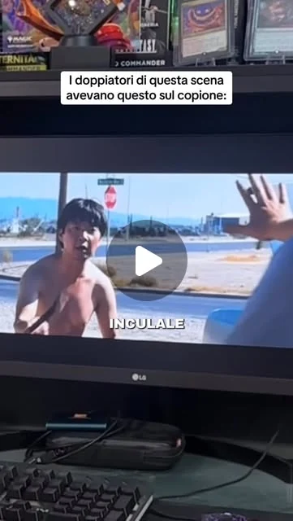
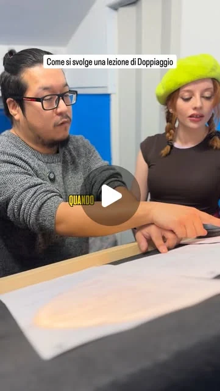
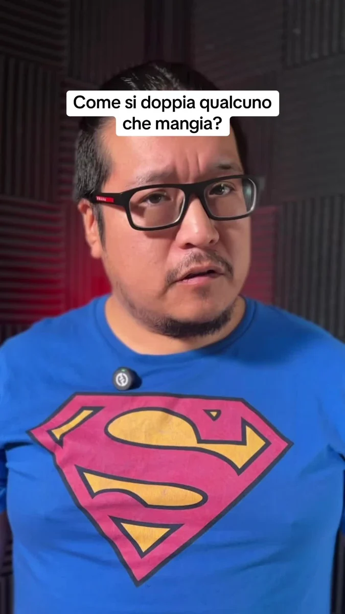

IL TALENTO MERITA UN’OCCASIONEI più preparati
vanno in sala.
Al termine del corso di doppiaggio, gli allievi più meritevoli saranno selezionati per sostenere provini con direttori e maestri di doppiaggio.
Ci impegniamo a darti gli strumenti per diventare un professionista. Se dimostri preparazione e talento, potrai farti ascoltare da chi lavora nel settore e giocarti le tue prime opportunità.
Informati sul corso e sui provini
- 01
Costruisci le tue basi.
Voce, interpretazione, ascolto e lavoro al leggìo. La preparazione comincia durante il corso.
- 02
Mettiti in luce.
Alla fine del percorso, gli allievi più meritevoli saranno selezionati per accedere ai provini.
- 03
Fatti ascoltare in sala.
Un confronto diretto con professionisti del doppiaggio: l’occasione per mostrare ciò che sai fare.
L’accesso ai provini avviene su selezione. Le opportunità professionali dipendono dalla preparazione, dall’esito del provino e dalle esigenze delle produzioni; non è garantito un impiego.


Seguici sui
nostri social.
La voce si allena in sala.
La passione continua anche qui.
Lezioni, curiosità e piccoli segreti del doppiaggio. Entra nel nostro mondo, un video alla volta.

InstagramL’accavallato, in pratica.Guarda su Instagram
InstagramDentro una lezione.Guarda su Instagram
TikTokUna voce a bocca piena.Guarda su TikTok